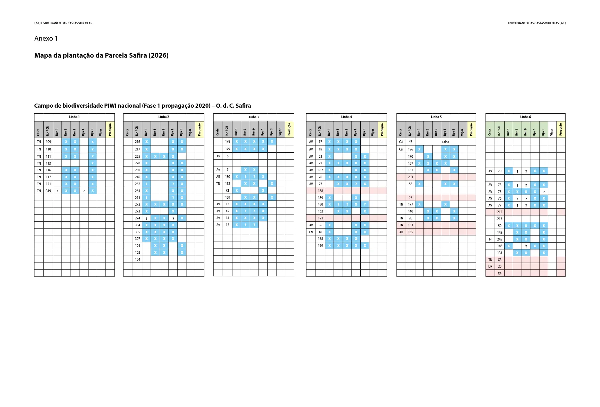
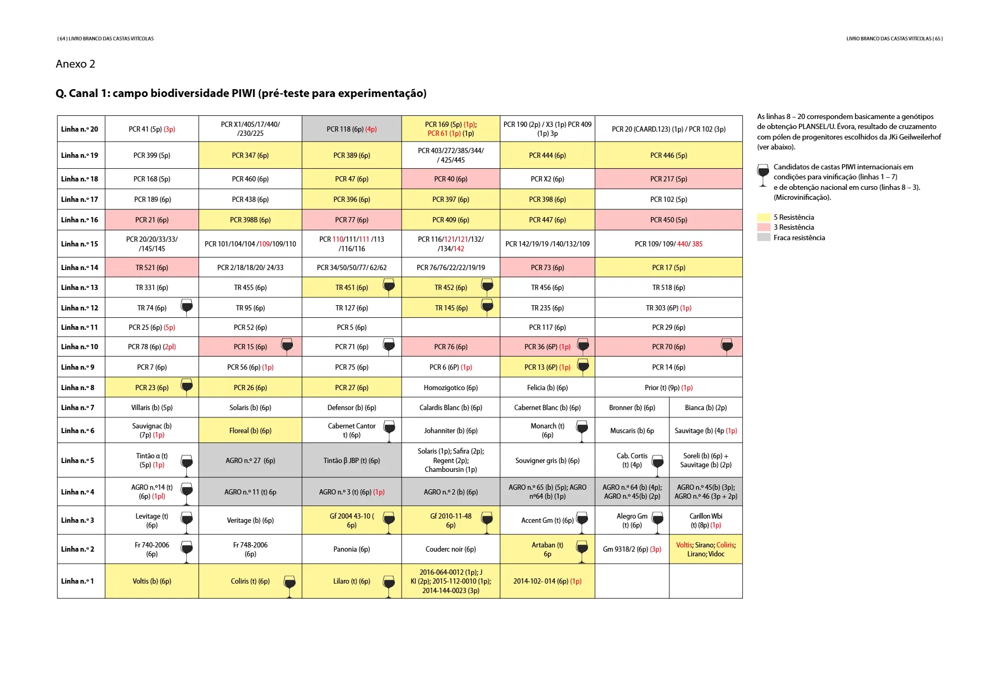
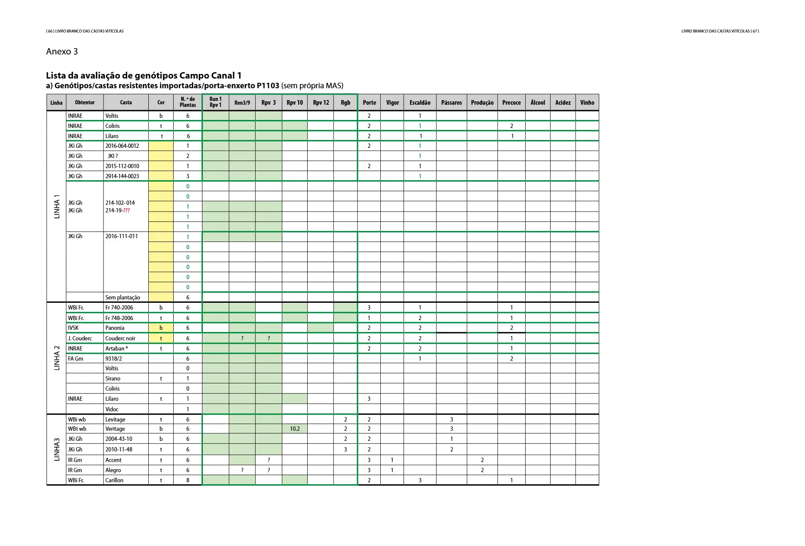
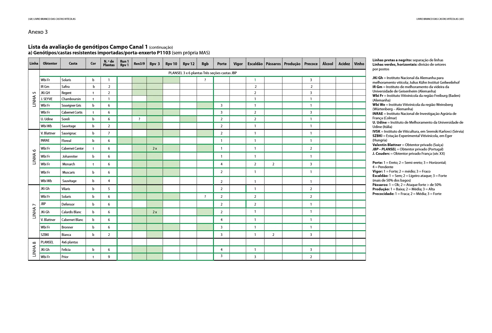
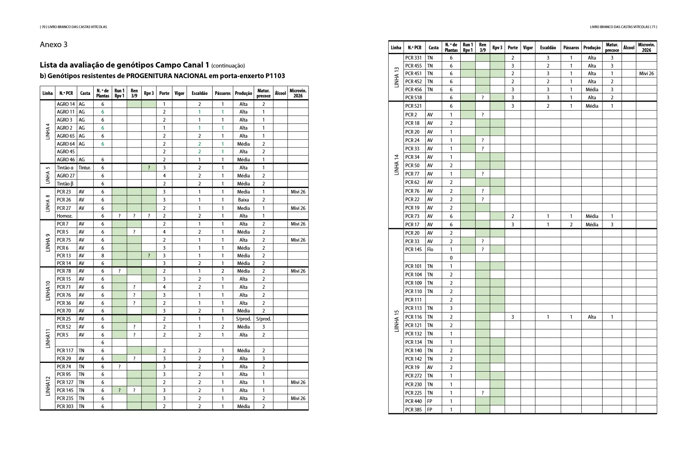
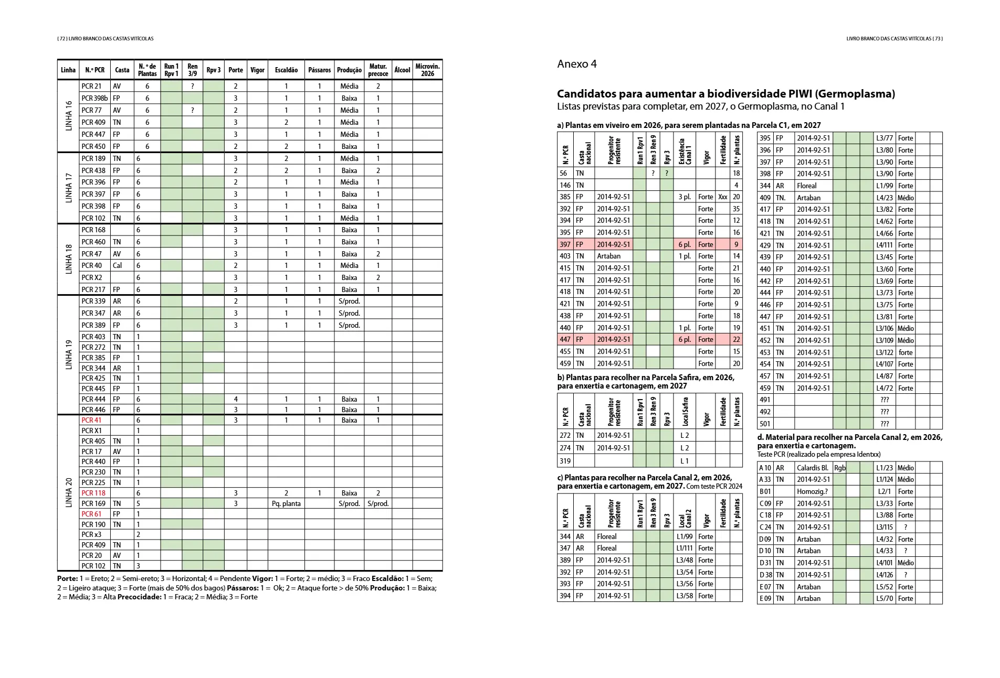
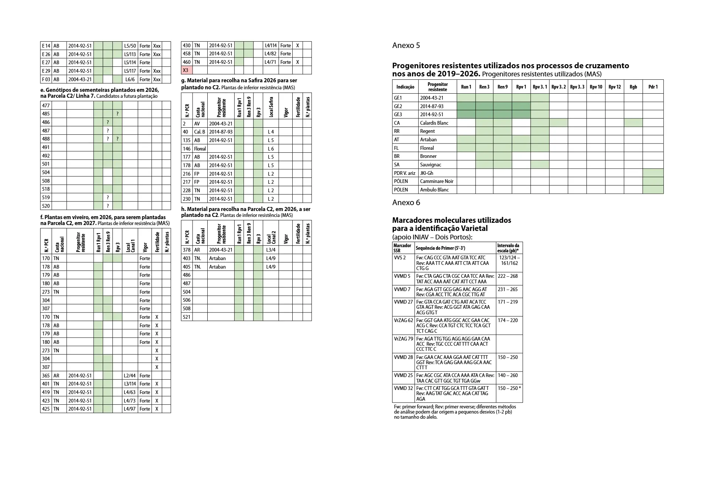
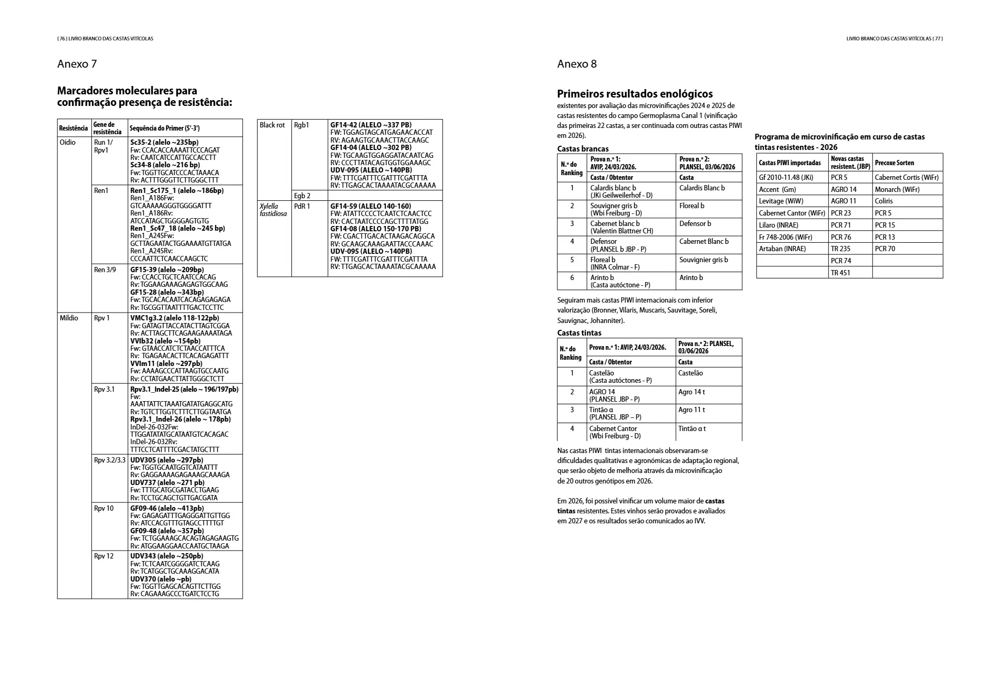

Anexos · Anexos: documentação da biodiversidade em material vitícola resistente
Anexos: documentação da biodiversidade em material vitícola resistente








Texto explicativo para a seleção dos motivos das capas dos capítulos:
Na última década, o Viveiro PLANSEL iniciou um programa de seleção de sete castas de elevada importância comercial in situ e instalou ex situ em Montemor-o-Novo, orientado para caracteres funcionais associados à adaptação às alterações ambientais. Entre os principais critérios incluem-se a resposta à disponibilidade hídrica e à rega, a tolerância ao escaldão e a temperaturas elevadas, bem como parâmetros relacionados com o teor alcoólico e a acidez. – Face ao novo paradigma europeu do melhoramento genético (regulamento 2026/1388), consideramos prioritário selecionar castas comercialmente relevantes com fenótipos de elevada capacidade adaptativa e aplicar técnicas de melhoramento que permitam desenvolver material vitícola (cisgenético) nacional resiliente. Esta estratégia poderá contribuir para os objetivos da
Farm to Fork e reduzir a dependência de castas e clones importados, especialmente em consideração da alta probidade de futuros apoios financeiros tipo programa Vitis para atingir o objetivo ecológico e de redução de CO2.